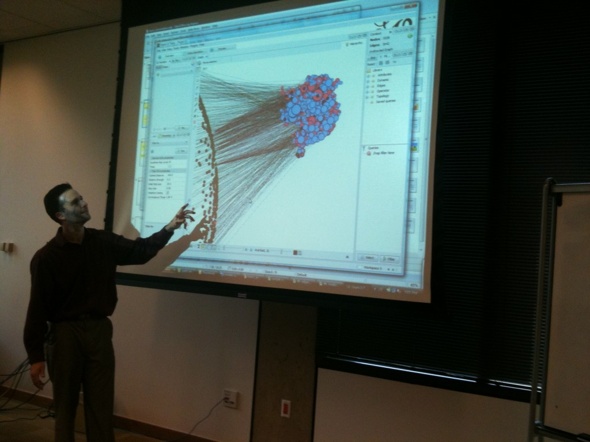

On Wednesday I gave a two-hour workshop on using Gephi. I had hoped to get into the more exotic aspects of the software, including dynamic networks and using sub-filters, but I barely had enough time to demonstrate how to set it up and pull in some network data. The other thing I never got around to doing was asking for someone to take some photos, and so the image below is the only record of the event, which otherwise went off without a hitch.

Along with a few sample datasets, including the DH@Stanford graph, I’ve also posted a .gexf version of the Digital Gazetteer of the Song Dynasty, which is the dataset on display above and serves as the basis of my presentation next week at the Association for Asian Studies annual conference. The panel, Digital Humanities and the Mechanics of Knowledge Production, also includes Ruth Mostern, with whom I created the DGSD and who integrated it into her upcoming book, Dividing the Realm in Order to Govern: The Spatial Organization of the Song State. For my part I’ll be presenting on the virtues of humanities scholars dealing directly with data and data structures rather than settling for a mediated view of the data provided in whatever format the database or corpus creator thought best. To that end, I’ll be presenting a reformulation of the DGSD as a network and exploring the suitability of representing historical regimes as spatial entities, networks and/or narratives.
Naturally, these workshops and conference presentations would be so much more engaging if I had a Kinect interface and a monitor of the size found in Cowboys Stadium.